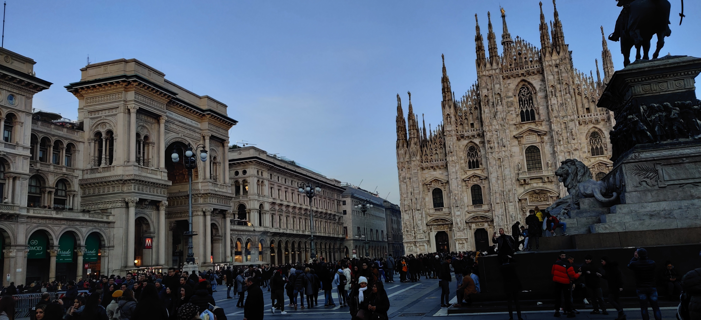

The Milan Cathedral or in Italian - Duomo Di Milano
Because of its position in the heart of Milan, the Duomo is usually the first stop when visiting the city. Don’t miss a walk on the roof, wandering among the spires and statues and taking in the breathtaking views.
Read more about Duomo Di Milano: here
La Scala
It’s an easy walk from the Duomo, through the Galleria and on to La Scala, Milan’s famous opera house which opened in 1778. Here some of the world’s best singers and orchestras can be heard and famous ballets seen. If you cannot book tickets to one of the performances, a visit to the Museo Teatrale alla Scala ( Museum) also includes a visit to one of the boxes where you can look down on the stage. If the theatre is being used, you may not be able to go into the box, so check on the board outside or ask when you buy your tickets
Read more about La Scala: here
Sforzesco Castle
The Visconti-Sforza Castle is a mediaeval castle located in the centre of the city of Vigevano, Lombardy, Northern Italy. In the 14th and 15th centuries, members of the Visconti and Sforza houses, lords and dukes of Milan, transformed a previous fortification into a vast family resort.
Read more about Sforzesco Castle: here
Galleria Vittorio Emanuele II
This 18th century glass and iron covered gallery is home to many beautiful shops, restaurants and cafes. Look up to see the magnificent central dome. Look down to see the emblems on the mosaic floor representing the cities of Milan, Rome, Florence and Turin. If you want to return to Milan you are supposed to place your heel on the emblem of Turin -the bull- and rotate clockwise!
Read more about Galleria Vittorio Emanuele II: here
The Last Supper
Leonardo da Vinci’s masterpiece, “The Last Supper”, is one of the most famous paintings in the world. It covers a wall in the former dining hall of the monastery attached to the Church of Santa Maria delle Grazie. In order to reduce deterioration, admission is strictly limited to 25 people every fifteen minutes. Tickets are often sold out months in advance, so buy them online as soon as you know you are visiting Milan.
Read more about The Last Supper: here